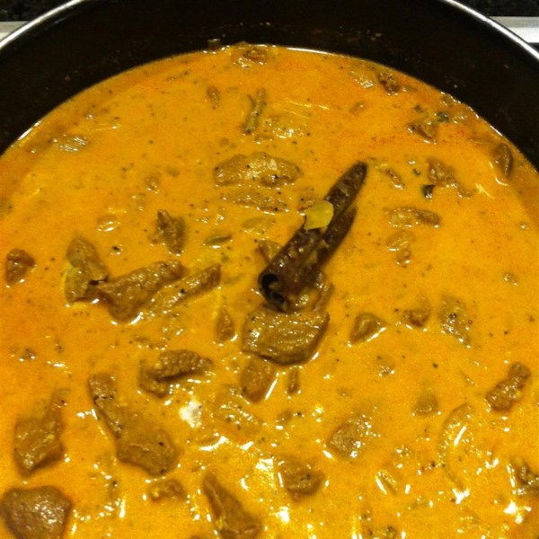

Sri Lankan Beef Curry

Ingredients
Marinate
- 1.3kg Beef, cubed
- 6 cloves garlic
- 1" piece ginger
- 3 1/2 tbsp white vinegar
- 2 tsp salt
- 1 tbsp ground black pepper
- 1 tbsp curry powder, toasted
- 1 1/2 tbsp cayenne pepper
Cook
- 3 tbsp vegetable oil
- 8 fresh curry leaves
- 4 strips pandan leaf
- 1" piece cinnamon stick
- 1 onion, sliced
Simmer Sauce
- 2 tbsp tomato paste
- 1 cup water
- 1 cup thick coconut milk or cream
- 2 whole cloves
- 4 green cardamom pods
Method
Marinate
- Crush ginger and garlic into a bowl
- Add vinegar, salt, pepper, toasted curry and cayenne powder
- Mix into a paste
- Add beef, mix until all is coated with the marinate
- Set aside for 30min.
Cook
- Heat oil in a pot to medium heat
- Add curry leaves and pandan strips
- Stir in onions and cinnamon stick.
- Cook until translucent and soft (~5min).
- Stir in tomato paste and water
- Add cloves and cardamom pods
- Add Beef and Simmer covered for 1 1/2 hours or until meat is tender.
- Simmer covered for 1 1/2 hours or until meat is tender.
- Cook rice
- Check every 30min, Add water or coconut milk if the curry is too dry
- Add coconut milk and heat through